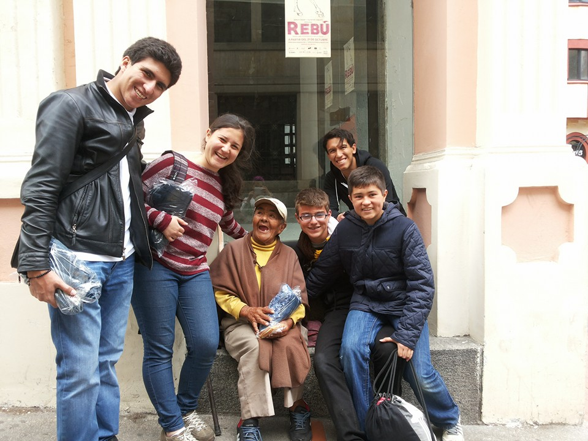
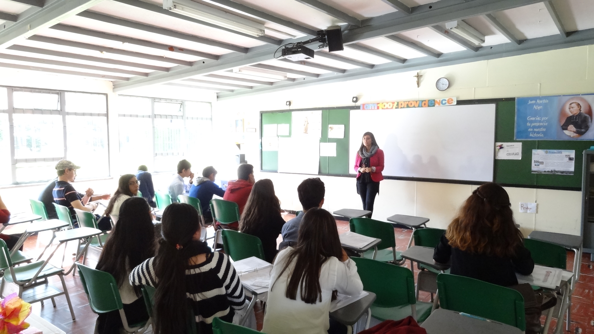
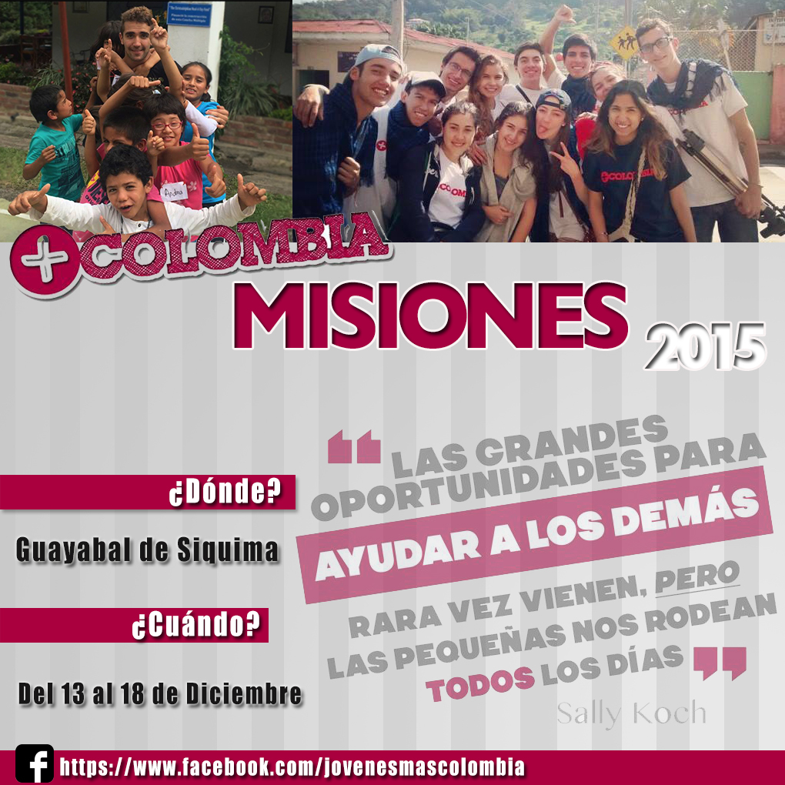

CDS
Es el Curso de Desarrollo Social, tiene como objetivo brindarle a los jóvenes todas las herramientas que necesitan para sacar adelante proyectos sociales. El CDS pretende que la juventud se de cuenta de la situación que viven muchas personas y que se enfrenten a la realidad del país.

CDL
Es el Curso de Desarrollo de Líderes, tiene como objetivo formar líderes capaces de transformar su entorno para la busqueda del bien común. El mundo esta sediento de jóvenes que entreguen su vida al servicio y a grandes ideales por los que valga la pena luchar. Este curso, pretende que los asistentes desarrollen la oratoria.

Misiones
Misiones es una experiencia que se vive dos veces al año, en Semana Santa y en Diciembre. Es una semana al servicio de una comunidad que cuenta con nuestra ayuda entusiasmo, y alegría. Es toda una semana compartiendo con más jóvenes que le dedican toda una semana a servirle a los demás y entender un poco de la realidad que tienen que afrontar muchas personas.
